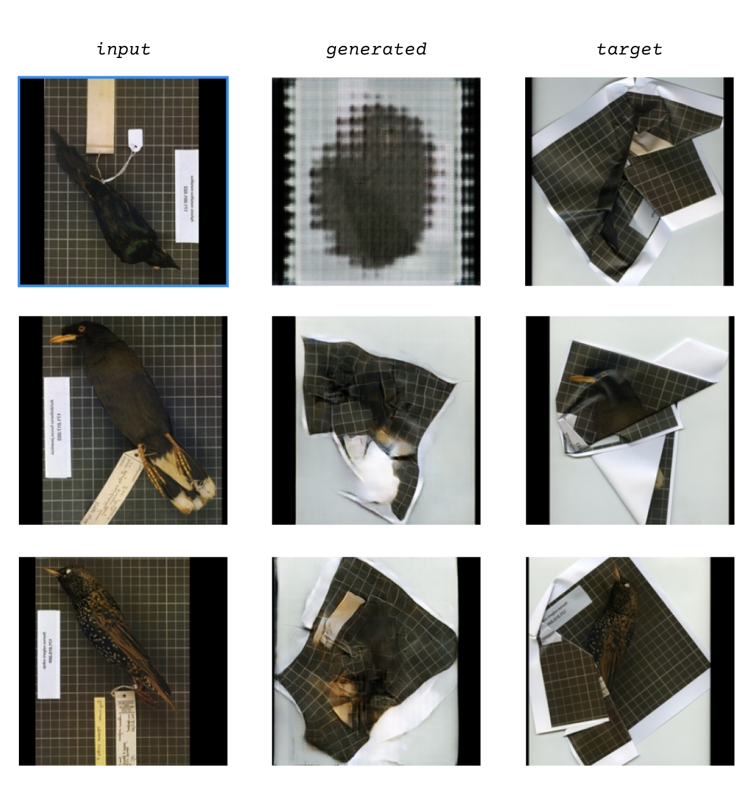

Kim Forero-Arnias
I'm an artist who works as an educator in a library setting. The images for my pix2pix model were collected from the iDigBio site. Dataset A is comprised of birds in the iDigBio collection under CC0 from the family Sturnidae. These images are printed, crushed between the glass and back of a scanner and then scanned to create Dataset B. I am currently working on a project that explores birds through collaging and animating their presence in artifacts from archival collections and data outputs from research labs. I was drawn to the process of printing, scanning and folding these images to then train in the pix2pix model as a continuation of the processing and manipulation of their bodies.
Prior to class I had already been working with this material. Im interested in the intersections of technology, libraries and nature and was printing out bird specimens found in ornithological collections and folding them to contort their form. Running their bodies through a GAN introduces an element where the form of the bird will literally be distorted by technology and Im curious to see how it turns out.
